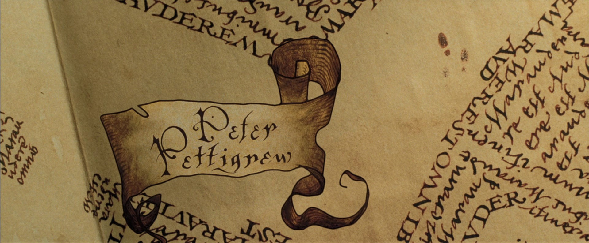
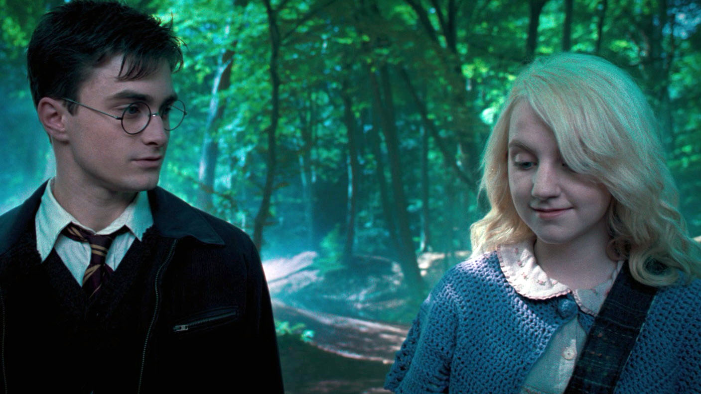
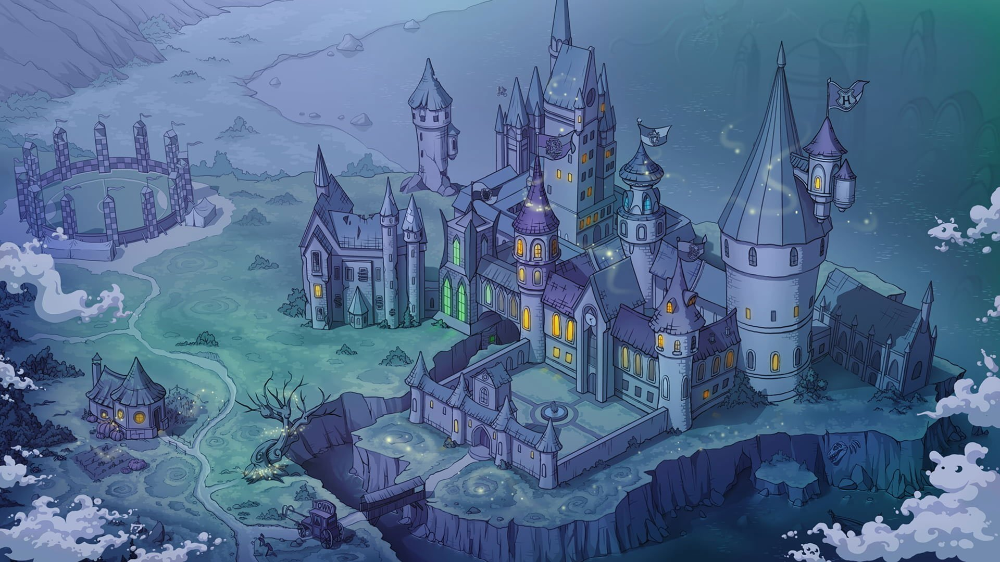

Harry Potter, fictional character, a boy wizard created by British author J.K. Rowling. His coming-of-age exploits were the subject of seven enormously popular novels (1997–2007), which were adapted into eight films (2001–11); a play and a book of its script appeared in 2016.
Harry Potter was first introduced in the novel Harry Potter and the Philosopher’s Stone (1997; also published as Harry Potter and the Sorcerer’s Stone), as an orphan who is mistreated by his guardian aunt and uncle and their son. On his 11th birthday Harry discovers that his parents were a witch and a wizard and that he, a wizard himself, has been invited to attend Hogwarts School of Witchcraft and Wizardry. He also learns that his parents had not perished in a car accident, as his aunt and uncle had told him, but that they instead had been murdered by an evil wizard named Voldemort.
Harry was the only person to have ever survived an attack by Voldemort—by somehow rebounding the latter’s “killing curse”—which left him with a lightning-bolt-shaped scar on his forehead. Indeed, Harry’s mysterious survival had all but killed Voldemort, who was left disembodied, and the young boy was thus already a celebrated figure in the “wizarding” community. At Hogwarts Harry becomes fast friends with classmates Ron Weasley and Hermione Granger and finds a rival in Draco Malfoy. He is taken under the wing of the school’s headmaster, Albus Dumbledore. These relationships persist throughout the series, especially as the young wizards and witches grow older and are called upon to take sides in a growing wizard war.
Unbeknownst to Harry, and to much of the wizarding world in general, Voldemort is planning a return to power. Although at first feeble and living as a parasite in a follower’s body, Voldemort makes attempts on Harry’s life beginning in the first book and continuing throughout the series. In the fourth volume, Harry Potter and the Goblet of Fire (2000), Voldemort regains his body and former strength through a magic ritual, and thereafter his army greatly increases in number. Harry and those who side with him—including some of his teachers, several classmates, and other members of the wizarding community—are forced on multiple occasions to battle Voldemort and his disciples, including the Malfoy family. The epic saga culminates with Harry accepting his role as the iconic “boy who lived” and facing almost certain death in the struggle against the evil wizard. With help from those who love him and believe in him, he is able to emerge victorious.

All rights reserved to Mr. Lucas Amates